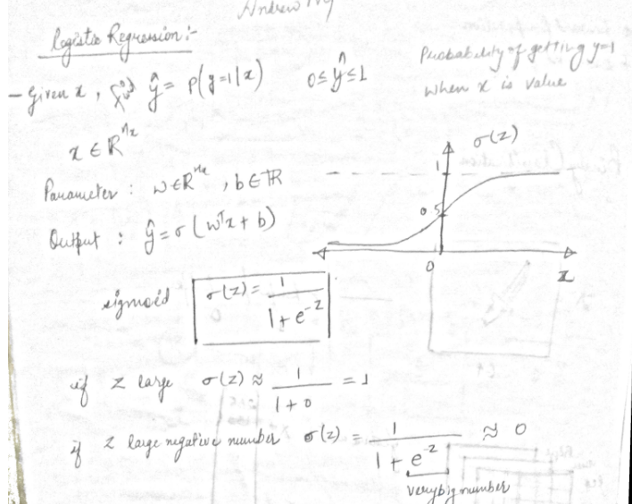
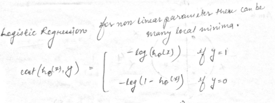
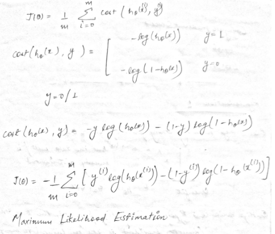
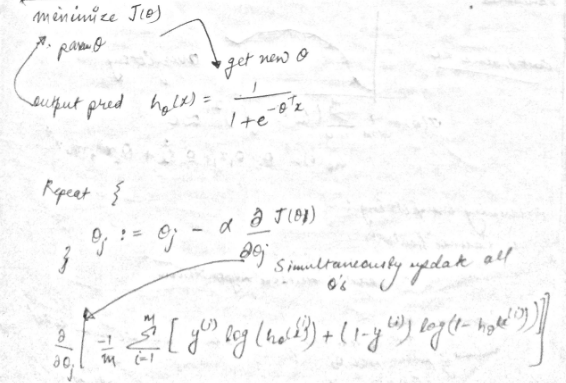
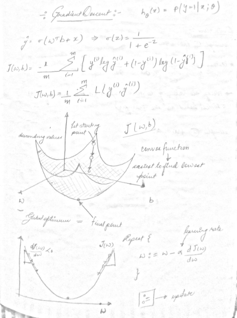
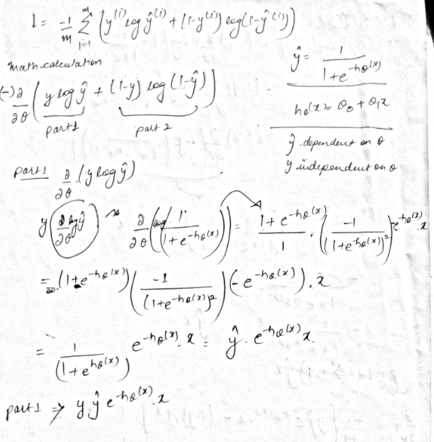
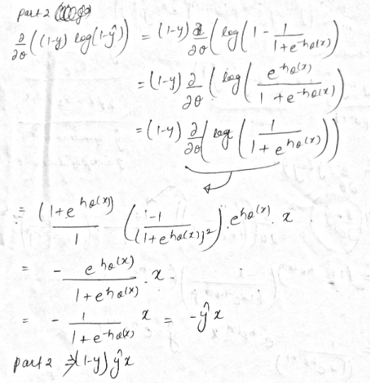
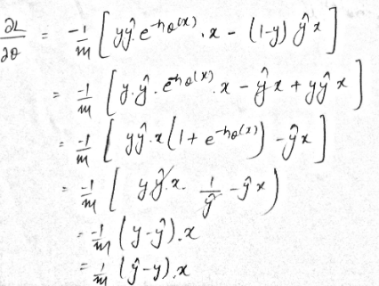
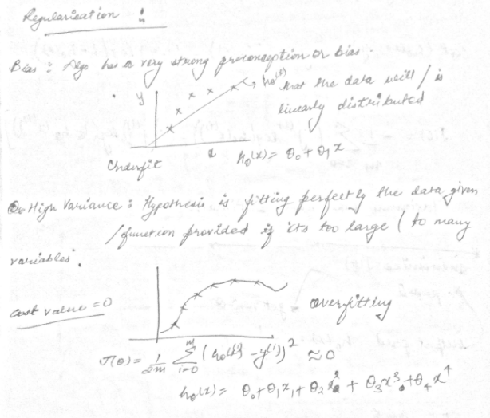

Logistic Regression¶
Logistic regression is a statistical model that in its basic form uses a logistic function to model a binary dependent variable, although many more complex extensions exist. In regression analysis, logistic regression (or logit regression) is estimating the parameters of a logistic model (a form of binary regression).

[4]:
import numpy as np
import pandas as pd
import matplotlib.pyplot as plt
import seaborn as sns
%matplotlib inline
[5]:
def linear_model_format_X(X):
if len(X.shape) == 1:
X = X.copy().reshape(-1,1)
return np.hstack(tup= ( np.ones(shape=(X.shape[0],1)) , X ) )
Cost Function¶
The cross-entropy loss function¶
We need a loss function that expresses, for an observationx, how close the classifier output
( ˆy = σ(w·x+b) )
is to the correct output (y, which is 0 or 1). We’ll call this:
L(ˆy,y) =How much ˆy differs from the true y
We do this via a loss function that prefers the correct class labels of the train-ing examples to bemore likely. This is called conditional maximum likelihood estimation: we choose the parametersw,b thatmaximize the log probability ofthe true y labels in the training datagiven the observations x. The resulting loss function is the negative log likelihood loss, generally called the cross-entropy loss.
 
[6]:
def calculate_entropy_cost(y_pred,y):
part_1 = y * np.log(y_pred)
part_2 = (1 - y) * np.log(1 - y_pred)
cost = ( -1 / y_pred.shape[0] ) * np.sum(part_1 + part_2)
return cost
Gradient Descent Algorithm¶


Math Calculation for Gradient Descent¶



[15]:
class LogisticRegression:
def __init__(self,alpha = 0.01 ,iterations = 10000):
self.alpha = alpha
self.iterations = iterations
self._theta = None
self._X = None
self._y = None
self._theta_history = None
self._cost_history = None
def _format_X_for_theta_0(self,X_i):
X_i = X_i.copy()
if len(X_i.shape) == 1:
X_i = X_i.reshape(-1,1)
if False in (X_i[...,0] == 1):
return np.hstack(tup=(np.ones(shape=(X_i.shape[0],1)) , X_i))
else:
return X_i
@property
def X(self):
return self._X
@property
def y(self):
return self._y
@property
def theta(self):
return self._theta
@property
def theta_history(self):
return self._theta_history
@property
def cost_history(self):
return self._cost_history
def predict(self,X):
format_X = self._format_X_for_theta_0(X)
if format_X.shape[1] == self._theta.shape[0]:
y_pred = sigmoid(format_X @ self._theta) # (m,1) = (m,n) * (n,1)
return y_pred
elif format_X.shape[1] == self._theta.shape[1]:
y_pred = sigmoid(format_X @ self._theta.T) # (m,1) = (m,n) * (n,1)
return y_pred
else:
raise ValueError("Shape is not proper.")
def train(self, X, y, verbose=True, method="BGD", theta_precision = 0.001, batch_size=30, regularization=False, penalty=1.0):
self._X = self._format_X_for_theta_0(X)
self._y = y
# number of features+1 because of theta_0
self._n = self._X.shape[1]
self._m = self._y.shape[0]
self._theta_history = []
self._cost_history = []
if method == "BGD":
self._theta = np.random.rand(1,self._n) * theta_precision
if verbose: print("random initial θ value :",self._theta)
for iteration in range(self.iterations):
# calculate y_pred
y_pred = self.predict(self._X)
# new θ to replace old θ
new_theta = None
# simultaneous operation
if regularization:
gradient = np.mean( ( y_pred - self._y ) * self._X, axis = 0 )
new_theta_0 = self._theta[:,[0]] - (self.alpha * gradient[0])
new_theta_rest = self._theta[:,range(1,self._n)] * (1 - (penalty/self._m) ) - (self.alpha * gradient[1:])
new_theta = np.hstack((new_theta_0,new_theta_rest))
else:
gradient = np.mean( ( y_pred - self._y ) * self._X, axis = 0 )
new_theta = self._theta - (self.alpha * gradient)
if np.isnan(np.sum(new_theta)) or np.isinf(np.sum(new_theta)):
print("breaking. found inf or nan.")
break
# override with new θ
self._theta = new_theta
# calculate cost to put in history
cost = calculate_entropy_cost(y_pred = self.predict(X=self._X), y = self._y)
self._cost_history.append(cost)
# calcualted theta in history
self._theta_history.append(self._theta[0])
elif method == "SGD": # stochastic gradient descent
self._theta = np.random.rand(1,self._n) * theta_precision
if verbose: print("random initial θ value :",self._theta)
for iteration in range(self.iterations):
# creating indices for batches
indices = np.random.randint(0,self._m,size=batch_size)
# creating batch for this iteration
X_batch = np.take(self._X,indices,axis=0)
y_batch = np.take(self._y,indices,axis=0)
# calculate y_pred
y_pred = self.predict(X_batch)
# new θ to replace old θ
new_theta = None
# simultaneous operation
if regularization:
gradient = np.mean( ( y_pred - y_batch ) * X_batch, axis = 0 )
new_theta_0 = self._theta[:,[0]] - (self.alpha * gradient[0])
new_theta_rest = self._theta[:,range(1,self._n)] * (1 - (penalty/self._m) ) - (self.alpha * gradient[1:])
new_theta = np.hstack((new_theta_0,new_theta_rest))
else:
gradient = np.mean( ( y_pred - y_batch ) * X_batch, axis = 0 )
new_theta = self._theta - (self.alpha * gradient)
if np.isnan(np.sum(new_theta)) or np.isinf(np.sum(new_theta)):
print("breaking. found inf or nan.")
break
# override with new θ
self._theta = new_theta
# calculate cost to put in history
cost = calculate_entropy_cost(y_pred = self.predict(X=X_batch), y = y_batch)
self._cost_history.append(cost)
# calcualted theta in history
self._theta_history.append(self._theta[0])
else:
print("No Method Defined.")
[16]:
from sklearn.datasets import load_breast_cancer
dataset = load_breast_cancer()
df = pd.DataFrame(data=dataset.data,columns=dataset.feature_names)
df["target"] = dataset.target
df.head()
[16]:
| mean radius | mean texture | mean perimeter | mean area | mean smoothness | mean compactness | mean concavity | mean concave points | mean symmetry | mean fractal dimension | ... | worst texture | worst perimeter | worst area | worst smoothness | worst compactness | worst concavity | worst concave points | worst symmetry | worst fractal dimension | target | |
|---|---|---|---|---|---|---|---|---|---|---|---|---|---|---|---|---|---|---|---|---|---|
| 0 | 17.99 | 10.38 | 122.80 | 1001.0 | 0.11840 | 0.27760 | 0.3001 | 0.14710 | 0.2419 | 0.07871 | ... | 17.33 | 184.60 | 2019.0 | 0.1622 | 0.6656 | 0.7119 | 0.2654 | 0.4601 | 0.11890 | 0 |
| 1 | 20.57 | 17.77 | 132.90 | 1326.0 | 0.08474 | 0.07864 | 0.0869 | 0.07017 | 0.1812 | 0.05667 | ... | 23.41 | 158.80 | 1956.0 | 0.1238 | 0.1866 | 0.2416 | 0.1860 | 0.2750 | 0.08902 | 0 |
| 2 | 19.69 | 21.25 | 130.00 | 1203.0 | 0.10960 | 0.15990 | 0.1974 | 0.12790 | 0.2069 | 0.05999 | ... | 25.53 | 152.50 | 1709.0 | 0.1444 | 0.4245 | 0.4504 | 0.2430 | 0.3613 | 0.08758 | 0 |
| 3 | 11.42 | 20.38 | 77.58 | 386.1 | 0.14250 | 0.28390 | 0.2414 | 0.10520 | 0.2597 | 0.09744 | ... | 26.50 | 98.87 | 567.7 | 0.2098 | 0.8663 | 0.6869 | 0.2575 | 0.6638 | 0.17300 | 0 |
| 4 | 20.29 | 14.34 | 135.10 | 1297.0 | 0.10030 | 0.13280 | 0.1980 | 0.10430 | 0.1809 | 0.05883 | ... | 16.67 | 152.20 | 1575.0 | 0.1374 | 0.2050 | 0.4000 | 0.1625 | 0.2364 | 0.07678 | 0 |
5 rows × 31 columns
[17]:
X = df[dataset.feature_names].values
y = df["target"].values.reshape(-1,1)
X.shape, y.shape
[17]:
((569, 30), (569, 1))
[18]:
from sklearn.preprocessing import StandardScaler
from sklearn.metrics import confusion_matrix,accuracy_score
scaler = StandardScaler()
X_i = df[dataset.feature_names].values
y = df["target"].values.reshape(-1,1)
X_scaled = scaler.fit_transform(X_i)
Logitsic Regression without Regression¶
Batch Gradient Descent¶
[19]:
logisitc_reg_model1 = LogisticRegression(alpha=0.03,iterations=1000)
logisitc_reg_model1.train(X=X_scaled, y=y, method="BGD")
y = logisitc_reg_model1.y
y_pred = logisitc_reg_model1.predict(X_scaled)
theta = logisitc_reg_model1.theta
theta_history = logisitc_reg_model1.theta_history
cost_history = logisitc_reg_model1.cost_history
print("Fit theta :",theta)
print(f"""
Confusion Matrix :
{confusion_matrix(y,y_pred>0.5)}
Accuracy Score :
{accuracy_score(y,y_pred>0.5)}
""")
fig = plt.figure(figsize=(10,10))
ax = fig.add_subplot(2,2,1)
ax.set(
xlabel="iterations",
ylabel="loss :j(θ)"
)
ax.plot(cost_history)
ax.grid(alpha=0.5)
ax = fig.add_subplot(2,2,2)
ax.set(
xlabel="y_pred",
ylabel="y"
)
ax.scatter(y_pred,y)
ax.grid(alpha=0.5)
ax = fig.add_subplot(2,2,(3,4))
ax.set(
ylabel="loss: j(θ)",
xlabel="θ"
)
ax.plot(theta_history,cost_history)
ax.grid(alpha=0.5)
plt.show()
random initial θ value : [[3.43820676e-04 2.44234637e-04 8.47725902e-04 9.89584263e-04
8.07625081e-05 6.63540762e-04 6.07785027e-04 8.64214692e-04
2.32109312e-04 6.14707278e-04 5.80991051e-04 8.49034246e-04
5.46092066e-04 9.69119288e-04 7.46816816e-04 3.33439672e-04
7.35565522e-04 9.38340924e-04 2.82191206e-04 3.67408286e-04
3.58850540e-05 4.87965118e-04 9.74260763e-04 9.14496325e-04
6.73616246e-04 3.37368327e-04 4.17933103e-04 6.93937054e-04
8.67834883e-04 4.08157926e-04 6.70602416e-04]]
Fit theta : [[ 0.4315998 -0.48964772 -0.50222963 -0.47967426 -0.49500558 -0.1875647
-0.07384953 -0.40875014 -0.5264858 -0.10616663 0.26988978 -0.52549664
0.00154857 -0.42177722 -0.45803567 -0.04403054 0.24807097 0.10826863
-0.07833925 0.12907899 0.30277893 -0.62812932 -0.64870895 -0.59072385
-0.59718205 -0.48696368 -0.21381106 -0.42197195 -0.57304068 -0.43079668
-0.13505408]]
Confusion Matrix :
[[205 7]
[ 2 355]]
Accuracy Score :
0.984182776801406

Stochastic Gradient Descent¶
[20]:
logisitc_reg_model2 = LogisticRegression(alpha=0.03,iterations=1000)
logisitc_reg_model2.train(X=X_scaled, y=y, method="SGD",batch_size=200)
y = logisitc_reg_model2.y
y_pred = logisitc_reg_model2.predict(X_scaled)
theta = logisitc_reg_model2.theta
theta_history = logisitc_reg_model2.theta_history
cost_history = logisitc_reg_model2.cost_history
print("Fit theta :",theta)
print(f"""
Confusion Matrix :
{confusion_matrix(y,y_pred>0.5)}
Accuracy Score :
{accuracy_score(y,y_pred>0.5)}
""")
fig = plt.figure(figsize=(10,10))
ax = fig.add_subplot(2,2,1)
ax.set(
xlabel="iterations",
ylabel="loss :j(θ)"
)
ax.plot(cost_history)
ax.grid(alpha=0.5)
ax = fig.add_subplot(2,2,2)
ax.set(
xlabel="y_pred",
ylabel="y"
)
ax.scatter(y_pred,y)
ax.grid(alpha=0.5)
ax = fig.add_subplot(2,2,(3,4))
ax.set(
ylabel="loss: j(θ)",
xlabel="θ"
)
ax.plot(theta_history,cost_history)
ax.grid(alpha=0.5)
plt.show()
random initial θ value : [[4.41479798e-04 4.72812804e-04 2.24844495e-04 2.52188226e-04
3.74074942e-04 5.70537261e-04 7.85943901e-04 4.72820141e-04
4.55924113e-04 4.16492283e-04 3.82408490e-04 9.44135705e-04
1.29332729e-04 5.64789391e-04 3.16377631e-04 7.38196916e-04
7.43560933e-04 8.61175965e-04 8.70590693e-04 5.06208886e-04
7.83172394e-05 1.90136784e-04 6.88824551e-04 7.85230465e-04
7.80573678e-04 6.60524224e-04 2.88242723e-05 6.88352550e-04
9.24426652e-04 7.85744968e-05 5.37121726e-04]]
Fit theta : [[ 0.42771334 -0.48810798 -0.50152412 -0.47890263 -0.49333594 -0.1853348
-0.07251305 -0.4059144 -0.52516415 -0.1100023 0.26840855 -0.53028862
0.0035719 -0.42656492 -0.45947704 -0.0388459 0.25399678 0.1078797
-0.08428098 0.12971902 0.30779179 -0.62691221 -0.64391814 -0.58933645
-0.59502922 -0.48699982 -0.21652376 -0.42142102 -0.57622444 -0.43416154
-0.13581235]]
Confusion Matrix :
[[205 7]
[ 2 355]]
Accuracy Score :
0.984182776801406
Logistic Regression with Regularization¶

Addressing Overfitting
Reduce features
manually select
model selection algorithm
Regularization
Keep all the features but reduce magnitude/values of parameter theta
Works well when we have a lot of features and each contributes a bit to predicting y

Stochastic Gradient Descent¶
[23]:
logisitc_reg_model3 = LogisticRegression(alpha=0.03,iterations=1000)
logisitc_reg_model3.train(X=X_scaled, y=y, method="SGD",batch_size=200,regularization=True,penalty=1.0)
y = logisitc_reg_model3.y
y_pred = logisitc_reg_model3.predict(X_scaled)
theta = logisitc_reg_model3.theta
theta_history = logisitc_reg_model3.theta_history
cost_history = logisitc_reg_model3.cost_history
print("Fit theta :",theta)
print(f"""
Confusion Matrix :
{confusion_matrix(y,y_pred>0.5)}
Accuracy Score :
{accuracy_score(y,y_pred>0.5)}
""")
fig = plt.figure(figsize=(10,10))
ax = fig.add_subplot(2,2,1)
ax.set(
xlabel="iterations",
ylabel="loss :j(θ)"
)
ax.plot(cost_history)
ax.grid(alpha=0.5)
ax = fig.add_subplot(2,2,2)
ax.set(
xlabel="y_pred",
ylabel="y"
)
ax.scatter(y_pred,y)
ax.grid(alpha=0.5)
ax = fig.add_subplot(2,2,(3,4))
ax.set(
ylabel="loss: j(θ)",
xlabel="θ"
)
ax.plot(theta_history,cost_history)
ax.grid(alpha=0.5)
plt.show()
random initial θ value : [[5.19825530e-04 2.56134765e-04 4.91584163e-04 7.50997107e-04
8.25121219e-04 4.33021824e-04 4.61548622e-05 4.46434801e-04
6.21568202e-04 5.25479258e-04 8.47013069e-04 6.65760723e-04
8.02776558e-04 9.45237426e-04 2.90484980e-04 3.18601539e-04
2.91675714e-04 4.81967873e-04 9.04864690e-04 8.52410849e-05
7.15320373e-04 4.81469781e-04 4.59864590e-04 5.55660238e-04
8.94333121e-04 2.45143657e-04 4.17173704e-05 9.46852887e-04
3.43192288e-04 7.63738254e-07 3.38543039e-04]]
Fit theta : [[ 0.51623671 -0.30850679 -0.29438282 -0.30370206 -0.29970758 -0.11393905
-0.08213339 -0.2535341 -0.32390646 -0.07544541 0.15096525 -0.28867912
0.00931243 -0.23586193 -0.24895518 -0.01071647 0.10312401 0.04529798
-0.07163214 0.07115136 0.1479496 -0.37593874 -0.37311871 -0.35729218
-0.34501709 -0.27574379 -0.16238925 -0.26571529 -0.35932896 -0.2603452
-0.10132424]]
Confusion Matrix :
[[199 13]
[ 1 356]]
Accuracy Score :
0.9753954305799648
Batch Gradient Descent¶
[24]:
logisitc_reg_model4 = LogisticRegression(alpha=0.03,iterations=1000)
logisitc_reg_model4.train(X=X_scaled, y=y, method="BGD",regularization=True,penalty=2.0)
y = logisitc_reg_model4.y
y_pred = logisitc_reg_model4.predict(X_scaled)
theta = logisitc_reg_model4.theta
theta_history = logisitc_reg_model4.theta_history
cost_history = logisitc_reg_model4.cost_history
print("Fit theta :",theta)
print(f"""
Confusion Matrix :
{confusion_matrix(y,y_pred>0.5)}
Accuracy Score :
{accuracy_score(y,y_pred>0.5)}
""")
fig = plt.figure(figsize=(10,10))
ax = fig.add_subplot(2,2,1)
ax.set(
xlabel="iterations",
ylabel="loss :j(θ)"
)
ax.plot(cost_history)
ax.grid(alpha=0.5)
ax = fig.add_subplot(2,2,2)
ax.set(
xlabel="y_pred",
ylabel="y"
)
ax.scatter(y_pred,y)
ax.grid(alpha=0.5)
ax = fig.add_subplot(2,2,(3,4))
ax.set(
ylabel="loss: j(θ)",
xlabel="θ"
)
ax.plot(theta_history,cost_history)
ax.grid(alpha=0.5)
plt.show()
random initial θ value : [[6.46660261e-04 3.88439846e-04 8.70254981e-05 6.49385296e-04
2.94954815e-04 6.16950798e-04 7.81887247e-04 6.33693784e-04
1.25202741e-04 6.01520289e-04 7.04939567e-04 5.81517466e-04
4.60401273e-04 6.31197046e-04 3.69087881e-04 1.08115976e-04
1.76891441e-04 4.72463299e-04 2.16930510e-04 4.10883291e-04
6.08284943e-04 1.81311793e-04 2.50574954e-04 4.56421679e-04
3.39055787e-04 9.51261146e-04 9.30382572e-04 4.20613075e-04
9.10470954e-04 2.98184766e-04 3.34037216e-06]]
Fit theta : [[ 0.56113368 -0.25573136 -0.22787571 -0.25259736 -0.24257025 -0.10101348
-0.09227762 -0.20080848 -0.26143928 -0.07107671 0.11375412 -0.21359598
0.01085161 -0.17923597 -0.1855201 0.00251606 0.05404883 0.0318219
-0.06782272 0.05134941 0.10657932 -0.29963945 -0.28257897 -0.28746323
-0.26934137 -0.21298829 -0.14924521 -0.21219736 -0.29231033 -0.20462169
-0.08327179]]
Confusion Matrix :
[[196 16]
[ 1 356]]
Accuracy Score :
0.9701230228471002